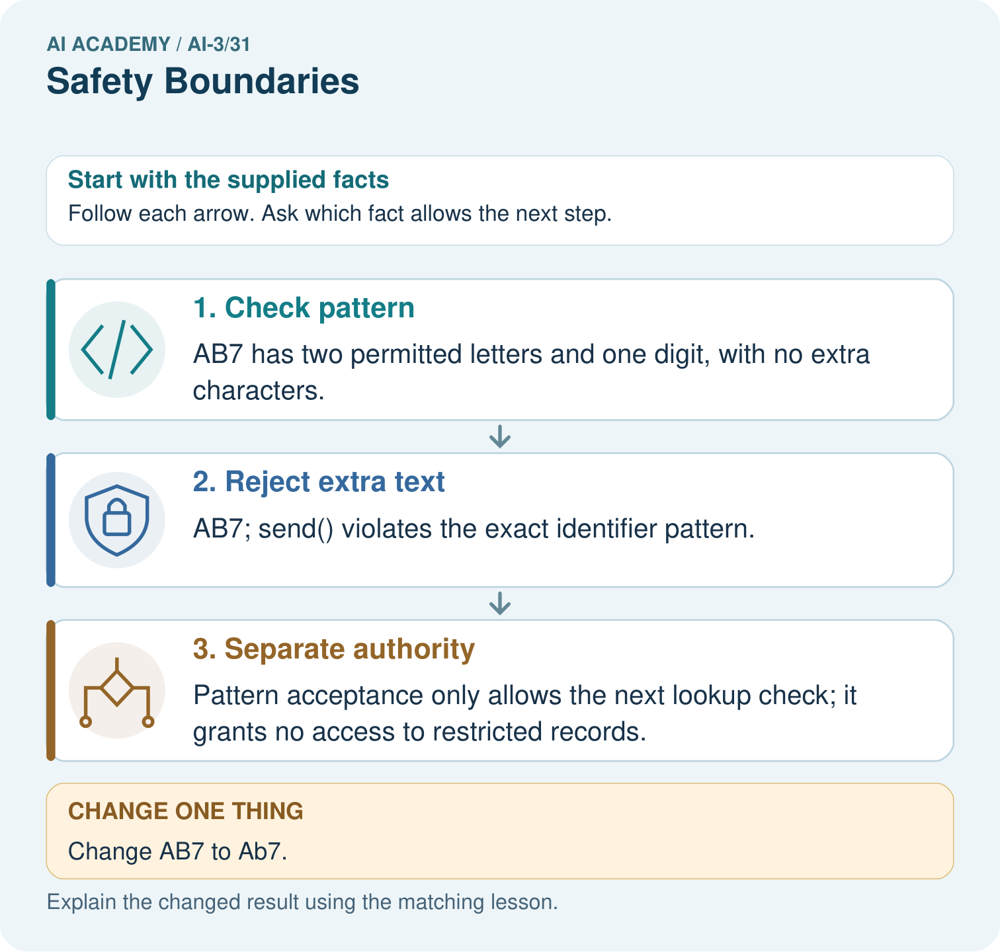
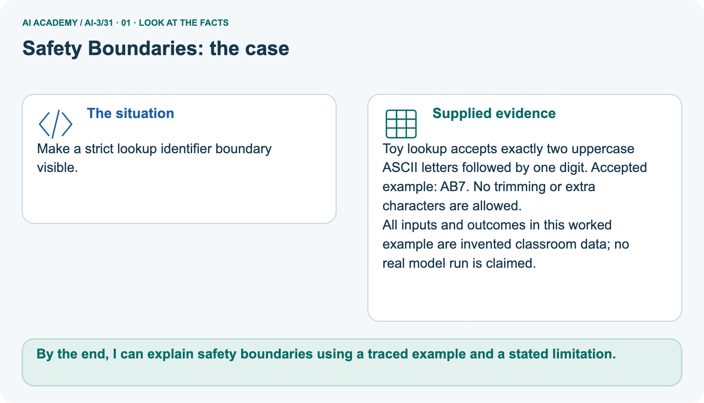
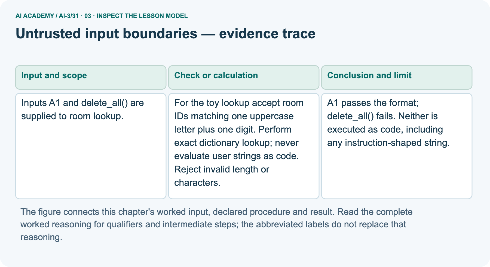
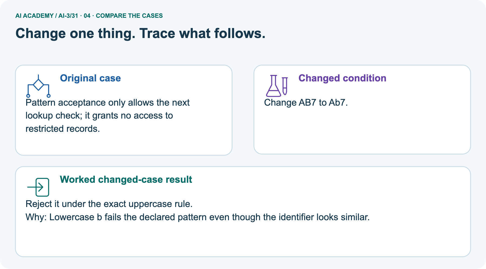
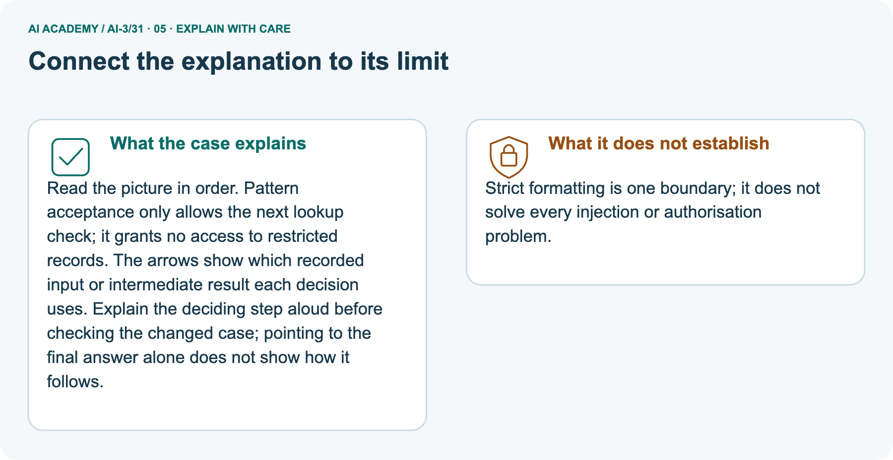
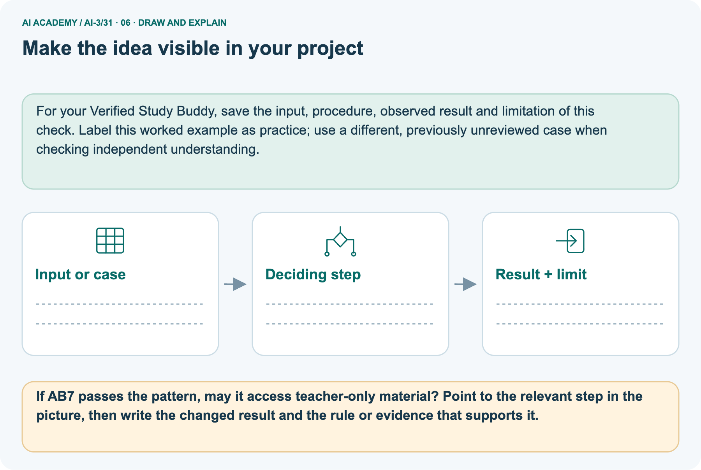

AI Academy · Level 3 · Grade 8 · Week 31 · Workbook
Safety Boundaries
Learn to understand, design, build, test and explain AI systems responsibly.
Project: Verified Study Buddy
THE CONNECTED WEEK
One connected safety-boundary record with a clarification extension.
Explain contracts, trace inputs, audit permission shortcuts and predict a boundary test.
Keep one habit: Retain exact strings, trusted role, operation scope and unresolved evidence separately.
Main lesson · Section 1
Recall · Retrieve earlier ideas
Try before opening notes.
Your evidence record
Try the recall before opening notes. Then use a different colour or a labelled second line to correct your explanation.
Without opening the old lesson, explain one key idea from Bias and Representation. Give an example and a mistake that the idea helps you avoid.
Without opening the old lesson, explain one key idea from Privacy by Design. Give an example and a mistake that the idea helps you avoid.
Without opening the old lesson, explain one key idea from Quality Rubrics. Give an example and a mistake that the idea helps you avoid.
Earlier wording, alternatives and picture transcripts
Bias and Representation
Privacy by Design
Quality Rubrics
Main lesson · Section 12
W1 · Explain an untrusted-input boundary
Name format, exact lookup, access and operation scope.
Your evidence record
Room W2/independent schema: exactly one uppercase ASCII letter plus one ASCII digit, e.g. A1/B2. Catalogue picture: two uppercase ASCII letters plus one digit, e.g. AB7. No trimming or extra characters. Use exact dictionary keys, never eval. Trusted application role controls access separately. Clarify missing ID; preserve capacity 8/12 conflict without precedence; absent record is not measured zero.
Program uses only fictional dictionaries.
Reference for this exercise: open this week’s student lesson, “Safety Boundaries”, at “See how it works” and “Follow a worked example”. Use the original worked values or code named in the question; the later pictorial case is a separate example. Keep this reference beside your workbook while practising.
Explain the weekly mechanism in your own words. Use the worked scenario to name its input, decision rule and output.
Main lesson · Section 13
W2 · Trace the one-letter room inputs
A1 is valid shape; command-like text remains inert and invalid.
Your evidence record
Room W2/independent schema: exactly one uppercase ASCII letter plus one ASCII digit, e.g. A1/B2. Catalogue picture: two uppercase ASCII letters plus one digit, e.g. AB7. No trimming or extra characters. Use exact dictionary keys, never eval. Trusted application role controls access separately. Clarify missing ID; preserve capacity 8/12 conflict without precedence; absent record is not measured zero.
Program uses only fictional dictionaries.
Inputs A1 and delete_all() are supplied to room lookup. Show the intermediate steps and give the conclusion with its scope.
Main lesson · Section 14
W3 · Audit a format-as-permission claim
Accepted shape does not grant restricted access.
Your evidence record
Room W2/independent schema: exactly one uppercase ASCII letter plus one ASCII digit, e.g. A1/B2. Catalogue picture: two uppercase ASCII letters plus one digit, e.g. AB7. No trimming or extra characters. Use exact dictionary keys, never eval. Trusted application role controls access separately. Clarify missing ID; preserve capacity 8/12 conflict without precedence; absent record is not measured zero.
Program uses only fictional dictionaries.
A report omits this qualification: A format check does not grant resource access; authorisation follows separately. Explain how omitting it could change a reader's interpretation, and write an accurate replacement.
Main lesson · Section 16
W5 · Design a revealing boundary input
Predict exact length/case/newline behavior before a run.
Your evidence record
Room W2/independent schema: exactly one uppercase ASCII letter plus one ASCII digit, e.g. A1/B2. Catalogue picture: two uppercase ASCII letters plus one digit, e.g. AB7. No trimming or extra characters. Use exact dictionary keys, never eval. Trusted application role controls access separately. Clarify missing ID; preserve capacity 8/12 conflict without precedence; absent record is not measured zero.
Program uses only fictional dictionaries.
Reference for this exercise: open this week’s student lesson, “Safety Boundaries”, at “See how it works” and “Follow a worked example”. Use the original worked values or code named in the question; the later pictorial case is a separate example. Keep this reference beside your workbook while practising.
For the worked scenario, propose one additional case that could reveal a failure, describe its expected outcome before running it, and explain what would need to remain fixed for a fair comparison.
Do not reuse W4 as a new final test after receiving feedback.
Main lesson · Section 4
W4 · Classify the fresh room-ID strings independently
Keep the first attempt before hints.
Your evidence record
Use the one-uppercase-ASCII-letter plus one-ASCII-digit room contract, with no trimming or extra characters. The task’s four strings are inputs as written, not executable code. After format acceptance, access and exact lookup remain separate checks; no real room registry or operation is supplied.
Classify B2, b2, B22 and B2; DROP under the exact format.
Attempt this case before feedback. Record any help. Earlier examples below are further practice; a case already practised with feedback cannot establish fresh transfer.
Earlier wording, alternatives and picture transcripts
Independent case: Apply a new case independently
Main lesson · Section 9
Project · Keep the decision and evidence
Extend the existing project record.
Your evidence record
Implement risk levels, refusal language, safe alternatives, and teacher-review gates.
The project change and evidence I will keep
Main lesson · Section 22
Feedback · Repair and return
Keep first attempt, repair and a changed-case check.
Your evidence record
Revisit this idea with your teacher after a delay. Familiarity is different from explaining and using it on a changed case.
| Evidence | My record |
|---|---|
| Worked alone / hint / model | |
| First step I repaired and why | |
| New case checked later; date and result | |
| What I can now explain without notes | |
| One remaining question |
Main lesson · Section 10
Finish · Judge your evidence
Point to work that supports your judgement.
Your evidence record
- I can explain the mechanism.
- I can show evidence.
- I can handle a changed case.
- I can name a limit.
Mark each as not yet, with help or independently, and attach supporting work.
Teacher review ____________________ Next step ____________________
Reference bank and extra practice
Choose the reference that helps your next step.
Reference · Supported W2 record
Reference · Section 2
Reference · Supported W2 record
Use when helpful; keep this practice separate from the selected first attempt.
Additional evidence
Use W2: Trace the worked case for Untrusted input boundaries. Record the answer once; the lesson and workbook refer to the same attempt.
| Given inputs | Procedure I chose | Middle steps | Result and check |
|---|---|---|---|
Extra practice · Repair a claim
Reference · Section 3
Extra practice · Repair a claim
Use when helpful; keep this practice separate from the selected first attempt.
Additional evidence
Use the worked case for Untrusted input boundaries. Proposed explanation: “The worked result establishes every future case”. Decide whether this explanation is supported.
Point to the step or supplied fact that decides; explain your repair if needed.
Reference · Earlier target
Reference · Section 5
Reference · Earlier target
Use when helpful; keep this practice separate from the selected first attempt.
Additional evidence
A plant-study assistant is asked for a person's medication dose. Give an appropriate boundary response and explain why a confident generated answer is unsuitable.
Extra practice · Earlier worked case
Reference · Section 6
Extra practice · Earlier worked case
Use when helpful; keep this practice separate from the selected first attempt.
Additional evidence
A Study Buddy is asked to decide whether a learner should take medicine.
Set a product boundary.
Show your trace, calculation or evidence
Extra practice · Changed case
Reference · Section 7
Extra practice · Changed case
Use when helpful; keep this practice separate from the selected first attempt.
Additional evidence
A study tool is asked to make a high-stakes personal decision outside its learning purpose. What boundary should the response show?
My practice reasoning
Week 31 Test and reflect
Extra practice · A revealing test
Reference · Section 8
Extra practice · A revealing test
Use when helpful; keep this practice separate from the selected first attempt.
Additional evidence
Create a changed input, boundary case or missing-information case. Write the expected answer or safe response before testing.
| Test record | My evidence |
|---|---|
| Changed input or condition | |
| Expected answer or fallback | |
| Observed result | |
| Why the result occurred |
Extra practice · Earlier transfer
Reference · Section 11
Extra practice · Earlier transfer
Use when helpful; keep this practice separate from the selected first attempt.
Additional evidence
A plant-study assistant is asked for a person's medication dose. Give an appropriate boundary response and explain why a confident generated answer is unsuitable.
Record support used: none, hint or teacher explanation.
Reference · Selected W4 response copy
Reference · Section 15
Reference · Selected W4 response copy
Use when helpful; keep this practice separate from the selected first attempt.
Additional evidence
Classify B2, b2, B22 and B2; DROP under the exact format.
Extension · Abstention and clarification — W1 Explain the mechanism
Reference · Section 17
Extension · Abstention and clarification — W1 Explain the mechanism
Ask the smallest resolving question and preserve missing evidence.
Boundary and source reference
Room W2/independent schema: exactly one uppercase ASCII letter plus one ASCII digit, e.g. A1/B2. Catalogue picture: two uppercase ASCII letters plus one digit, e.g. AB7. No trimming or extra characters. Use exact dictionary keys, never eval. Trusted application role controls access separately. Clarify missing ID; preserve capacity 8/12 conflict without precedence; absent record is not measured zero.
Program uses only fictional dictionaries.
Extension task and response
Explain the weekly mechanism in your own words. Use the worked scenario to name its input, decision rule and output.
Extension · Abstention and clarification — W2 Trace the worked case
Reference · Section 18
Extension · Abstention and clarification — W2 Trace the worked case
Ask the smallest resolving question and preserve missing evidence.
Boundary and source reference
Room W2/independent schema: exactly one uppercase ASCII letter plus one ASCII digit, e.g. A1/B2. Catalogue picture: two uppercase ASCII letters plus one digit, e.g. AB7. No trimming or extra characters. Use exact dictionary keys, never eval. Trusted application role controls access separately. Clarify missing ID; preserve capacity 8/12 conflict without precedence; absent record is not measured zero.
Program uses only fictional dictionaries.
Extension task and response
Approval names room B, but two registers give capacities 8 and 12 with no precedence rule. The question asks maximum attendance. Show the intermediate steps and give the conclusion with its scope.
Extension · Abstention and clarification — W3 Audit the limit
Reference · Section 19
Extension · Abstention and clarification — W3 Audit the limit
Ask the smallest resolving question and preserve missing evidence.
Boundary and source reference
Room W2/independent schema: exactly one uppercase ASCII letter plus one ASCII digit, e.g. A1/B2. Catalogue picture: two uppercase ASCII letters plus one digit, e.g. AB7. No trimming or extra characters. Use exact dictionary keys, never eval. Trusted application role controls access separately. Clarify missing ID; preserve capacity 8/12 conflict without precedence; absent record is not measured zero.
Program uses only fictional dictionaries.
Extension task and response
A report omits this qualification: An abstention avoids an unsupported answer but does not automatically make a system useful; evaluate appropriate answers and appropriate fallbacks separately.
Explain how omitting it could change a reader's interpretation, and write an accurate replacement.
Extension · Abstention and clarification — W4 Apply a new case independently
Reference · Section 20
Extension · Abstention and clarification — W4 Apply a new case independently
Retained extension task with its own teacher key and response.
Extension question and record
The request says use the hall, but approved rooms include H1 and H2 with different capacities. No hall ID is given. What question should be asked?
Extension · Abstention and clarification — W5 Design a revealing follow-up
Reference · Section 21
Extension · Abstention and clarification — W5 Design a revealing follow-up
Ask the smallest resolving question and preserve missing evidence.
Boundary and source reference
Room W2/independent schema: exactly one uppercase ASCII letter plus one ASCII digit, e.g. A1/B2. Catalogue picture: two uppercase ASCII letters plus one digit, e.g. AB7. No trimming or extra characters. Use exact dictionary keys, never eval. Trusted application role controls access separately. Clarify missing ID; preserve capacity 8/12 conflict without precedence; absent record is not measured zero.
Program uses only fictional dictionaries.
Extension task and response
For the worked scenario, propose one additional case that could reveal a failure, describe its expected outcome before running it, and explain what would need to remain fixed for a fair comparison.
Do not reuse W4 as a new final test after receiving feedback.
Extra practice · Pictured case
Reference · Section 23
Extra practice · Pictured case
Use when helpful; keep this practice separate from the selected first attempt.
Additional evidence
Make a strict lookup identifier boundary visible.
Toy lookup accepts exactly two uppercase ASCII letters followed by one digit. Accepted example: AB7. No trimming or extra characters are allowed.
All inputs and outcomes in this worked example are invented classroom data; no real model run is claimed.



If AB7 passes the pattern, may it access teacher-only material? Point to the relevant step in the picture, then write the changed result and the rule or evidence that supports it.
Support used: alone / hint / worked example. This record is practice evidence.
Project connection: For your Verified Study Buddy, save the input, procedure, observed result and limitation of this check.
Label this worked example as practice; use a different, previously unreviewed case when checking independent understanding.
Reference · Project milestone
Reference · Section 24
Reference · Project milestone
Use when helpful; keep this practice separate from the selected first attempt.
Additional evidence
Project: Verified Study Buddy
Current milestone: Present and defend. Demonstrate the system, explain one failure and justify the next improvement with evidence.
For your Verified Study Buddy, save the input, procedure, observed result and limitation of this check.
Label this worked example as practice; use a different, previously unreviewed case when checking independent understanding.
| Evidence to keep | My record |
|---|---|
| This week’s input and deciding step | |
| Prediction and actual result (or labelled paper trace) | |
| One change since the previous checkpoint and why | |
| One error or limit and the next test |
Extra practice · Pictures, feedback and repair
Reference · Section 25
Extra practice · Pictures, feedback and repair
Try before opening feedback; keep the selected independent task separate.
First supported question
Make a strict lookup identifier boundary visible.
Which labelled step matches this detail? Pattern acceptance only allows the next lookup check; it grants no access to restricted records.
1. Separate authority
2. Check pattern
3. Reject extra text
Hint if needed: Read the steps in the pictorial case. Match the supplied detail to the stage that performs or records it.
After your attempt, compare with the supported explanation: Separate authority Pattern acceptance only allows the next lookup check; it grants no access to restricted records. Read the picture in order.
Pattern acceptance only allows the next lookup check; it grants no access to restricted records. The arrows show which recorded input or intermediate result each decision uses.
Explain the deciding step aloud before checking the changed case; pointing to the final answer alone does not show how it follows.
Practice 1: explain the deciding evidence
Check after trying
Practice 2: explain the deciding evidence
Changed-case question
Changed-case practice: Change AB7 to Ab7. Which conclusion is supported by the supplied facts?
1. We can decide the result without examining the changed input or the procedure.
2. This one example guarantees correct results for every future input.
3. Reject it under the exact uppercase rule.
Hint if needed: Use the changed condition and the deciding step in the pictorial trace. The answer must say what follows from those facts.
After your attempt, compare with the supported explanation: Reject it under the exact uppercase rule. Lowercase b fails the declared pattern even though the identifier looks similar.
Check changed case
Repair a missing building block
Repair and keep evidence
Review Bias and Representation (ai-3/30). Goal: Explain the mechanism and terminology of representation and bias evaluation. Short practice: Explain why comparing six correct answers in each group would mislead.
Point to the relevant step in the picture, then write the changed result and the rule or evidence that supports it.. Return to this week and explain what you changed.
Review Privacy by Design (ai-3/28). Goal: Explain the mechanism and terminology of data retention and deletion. Short practice: Which IDs and locations must appear in the deletion evidence?
Point to the relevant step in the picture, then write the changed result and the rule or evidence that supports it.. Return to this week and explain what you changed.
Review Quality Rubrics (ai-3/25). Goal: Judge an output using separate observable rubric criteria. Short practice: Why is “one out of two checks passed” an insufficient release decision? Point to the relevant step in the picture, then write the changed result and the rule or evidence that supports it.. Return to this week and explain what you changed.
The browser lab lets you edit the supported Python examples already included in this lesson. Predict first, run, inspect the actual output or error, change one input, then run again.
Keep code, predictions, actual results and a reasoned revision together. On paper, label your result as a trace rather than an execution.
Use Download completed work in the hosted lesson to export your answers, reflections, practice feedback and code-run evidence. Open the HTML copy to read or print it.
Drafts stay in this browser when storage is available; clear drafts on a shared device.
Earlier wording, alternatives and picture transcripts
Use this supported practice once, in the browser or on paper. Keep the reserved independent assessment for a separate first attempt before teacher feedback.
Predict, run and debug
Keep your completed work
Reference · Six-picture response sheets
Reference · Section 26
Reference · Six-picture response sheets
Choose the relevant picture rather than repeating every task.
01. Safety Boundaries: the case



Make a strict lookup identifier boundary visible. Supplied facts: Toy lookup accepts exactly two uppercase ASCII letters followed by one digit. Accepted example: AB7. No trimming or extra characters are allowed.
All inputs and outcomes in this worked example are invented classroom data; no real model run is claimed.
Point to the given fact that matters most. Explain why it matters.
02. Follow the deciding steps


Check pattern: AB7 has two permitted letters and one digit, with no extra characters. → Reject extra text: AB7; send() violates the exact identifier pattern. → Separate authority: Pattern acceptance only allows the next lookup check; it grants no access to restricted records.
Point to each numbered stage and explain which recorded input it uses.
03. Untrusted input boundaries — evidence trace



Untrusted input boundaries — evidence trace. Inputs A1 and delete_all() are supplied to room lookup. | For the toy lookup accept room IDs matching one uppercase letter plus one digit.
Perform exact dictionary lookup; never evaluate user strings as code. Reject invalid length or characters. | A1 passes the format; delete_all() fails. Neither is executed as code, including any instruction-shaped string.
Read the labels and values. Explain the relationship the model shows.
04. Change one thing. Trace what follows.



Original case: Pattern acceptance only allows the next lookup check; it grants no access to restricted records. Changed condition: Change AB7 to Ab7. Expected result: Reject it under the exact uppercase rule.
Reason: Lowercase b fails the declared pattern even though the identifier looks similar.
Predict before checking the worked changed-case result. Name what changed and what the supplied facts allow you to conclude.
05. Connect the explanation to its limit



Read the picture in order. Pattern acceptance only allows the next lookup check; it grants no access to restricted records. The arrows show which recorded input or intermediate result each decision uses.
Explain the deciding step aloud before checking the changed case; pointing to the final answer alone does not show how it follows.
Limit: Strict formatting is one boundary; it does not solve every injection or authorisation problem.
Explain the case, then point to a limit on the claim.
06. Make the idea visible in your project



For your Verified Study Buddy, save the input, procedure, observed result and limitation of this check.
Label this worked example as practice; use a different, previously unreviewed case when checking independent understanding. Draw your input, deciding step, result and limit.
Supported question: If AB7 passes the pattern, may it access teacher-only material? Point to the relevant step in the picture, then write the changed result and the rule or evidence that supports it.
Draw your project trace and justify the deciding step using evidence.